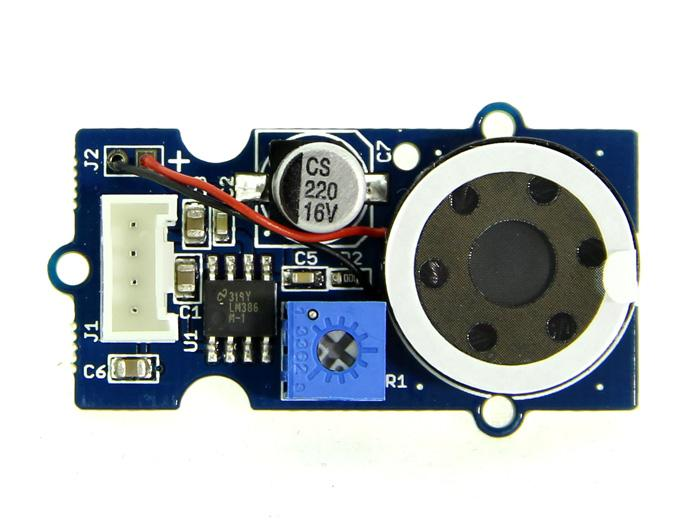
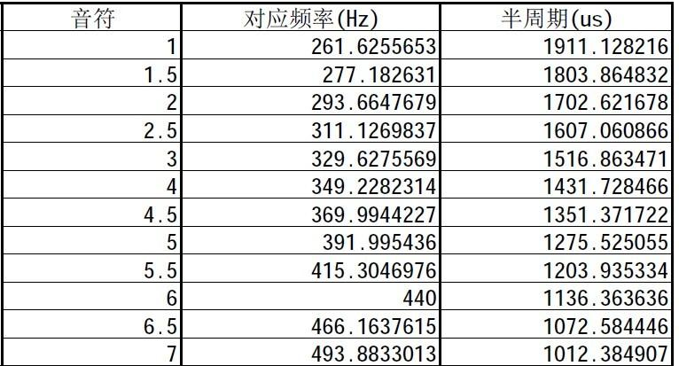

The Grove- Speaker is a module which consists of power amplification and voice outputs. The loudness can be adjusted by the on-board potentiometer. With different input frequency, the loud-speaker generated different tones. Coding the music into arduino, DIY your own music box!
Model:COM05051P

| Item | Min | Typical | Max | Unit |
|---|---|---|---|---|
| Working Voltage | 4.0 | 5.0 | 5.5 | VDC |
| Voltage Gain | - | - | 46 | db |
| Band Width | - | - | 20 | KHz |
The speaker can emit a variety of sounds like a car horn, doorbell and ignition . The different sounds are based on the frequency of the input signal.
You can supply different frequency signal to this module with Arduino. Arduino generates these signal via PWM or even digital write and delay.Here we are going to show you how to generate these signals using delay(), the speaker sound bass 1~7.

/*macro definition of Speaker pin*/
#define SPEAKER 3
int BassTab[]={1911,1702,1516,1431,1275,1136,1012};//bass 1~7
void setup()
{
pinInit();
}
void loop()
{
/*sound bass 1~7*/
for(int note_index=0;note_index<7;note_index++)
{
sound(note_index);
delay(500);
}
}
void pinInit()
{
pinMode(SPEAKER,OUTPUT);
digitalWrite(SPEAKER,LOW);
}
void sound(uint8_t note_index)
{
for(int i=0;i<100;i++)
{
digitalWrite(SPEAKER,HIGH);
delayMicroseconds(BassTab[note_index]);
digitalWrite(SPEAKER,LOW);
delayMicroseconds(BassTab[note_index]);
}
}
Note: Due to the influence of the capacitance, the module can only output the bass signal, and the treble is unable to emit.
If you have questions or other better design ideas, you can go to our forum or wish to discuss.
Copyright (c) 2008-2016 Seeed Development Limited (www.seeedstudio.com / www.seeed.cc)